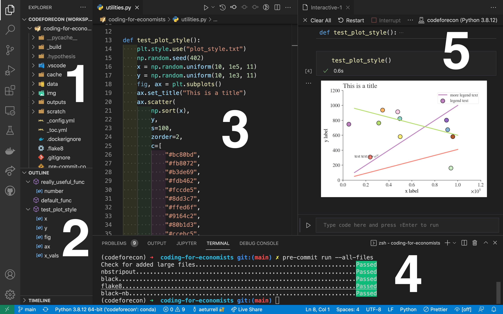

%%bash
git config --get user.nameaeturrellIn this chapter, you’re going to learn about version control. This will enable you to keep track of any code you write, down to the line, following best software development practices. It can be a challenging topic as it requires a different mindset to the one you’re probably used to where you just save a file. But I promise you that it’s worth it—and it will really help you ensure that your analysis is reproducible, and easily packaged up into a replication packet.
This chapter has benefitted from a wide range of sources, including Research Software Engineering with Python, the free online book Pro Git, Grant McDermott’s ever excellent notes, and the Alan Turing Institute’s Research Software Engineering with Python.
Version control means keep tracking of the versions of the assets (code, data, models) that you are working with to produce analysis. In this chapter, we’ll mainly be looking at version control for plain text files (this includes code but also other text files, such as latex files).
Note that, if you’re working with data or models that are changing a lot, there are technologies for version control of data and models (for example, DVC and pachyderm) too—but we don’t cover these here.
When coders talk about version control, they’re usually referring to the ability to record changes to a file or set of files over time. Furthermore, they’re usually talking about a specific technology for version control—a programme called git, that we’ll see more of later in the chapter.
You should also know right up front that there’s a distinction between git—the tool that can do version control, and GitHub—a central repository that can save the record of your version history on the cloud.
One of the most important things to get your head around with version control is that it offers much more than Dropbox or Google Drive. Those do not offer you:
We’ll find out more about these abilities later in the chapter.
Version control doesn’t do some things that Dropbox and Google Drive do though: it doesn’t save your files, or even sync them, automatically; you have to manually say when you wish to lodge a more recent version of a file.
Version control based on git is also different in that it works at the project-folder level, keeping everything you need for one project in one structure called a repository.
One benefit of version control is that it aids reproducibility. This helps future you (if your computer gets busted), your co-authors (who can “clone” your repository), and perhaps even the world at large (if you open up your source code). By putting your repository under version control at the project-folder level, you make it much easier for others to work with it and make changes.
Finally, version control is the de facto standard for managing code. It’s a very important part of coding, so if you can learn to use even a little bit, it’s well worth it.
There are plenty of benefits to using version control. Ultimately it will allow you to be a better analyst, researcher, and economist because your work will be better recorded, more reproducible, and easier to expand.
Version control solves lots of problems in research. Ever had a file called “final_final_v3.doc”? Yeah, I bet you have.

Version control aims to remove the problems associated with trying to have an individual track all the different versions. It gets even worse when multiple people are involved, emailing around spreadsheets or code with the same file names but different contents.
Version control gives you many benefits and abilities: - save changes that you’ve made to code, text files (eg latex files), and to small amounts of data; - access a complete organised revision history of your work; - revert selected files back to a previous state; - revert the entire project back to a previous state; - compare changes over time; - go back and forth between many different versions of the same file; - safely experiment with changing things (on a different branch) - concurrently collaborate on the same code base with others; - merge changes from multiple authors together; - see who last modified something that might be causing a problem down to the individual line and time it was added; and - much more.
Modern version control systems let you easily answer questions like who wrote this line and when? They also let you attach a message to every change you make. This feature is particularly useful when revising papers; you can have a commit per referee comment that you deal with and know exactly what you changed in the code and paper for it.
Of course, your git commit messages do need to be informative…

You may wonder who uses version control. It’s researchers, software developrs, analysts, data scientists; anyone who has plain text files that they need to track.
There are some files you wouldn’t or shouldn’t put under version control:
By far the most popular technology for version control of plain text files (which includes code, latex, notebooks, and markdown) is git. Git is a system for lodging changes, tracking them, and backing them up to a central repository. It is the industry standard and ubiquitous for coding.
Once you’ve installed it (which we’ll come to), git is a programme that is available on your computer’s console (aka the command line, covered in The Command Line). Some people use it directly from the command line, but there are also good Graphical User Interfaces (GUIs) around for it, including Visual Studio Code, which this book recommends for coding.
Git is a distributed version control system. This means that the complete codebase, including its full history, is mirrored on every developer’s computer (including the central repository).
It’s fair to say that git has a steep learning curve, as immortalised by the below XKCD comic.

There are two main ways to use git:
In this chapter, we’ll try to equip you with:
Let’s get started with version control.
If you’re working through this book on Google Colab, GitHub Codespaces, or other prepared systems, then you’re likely to find that git is already installed. You can check this by running
git --versionon the command line.
If you are using a Jupyter Notebook, or other notebook environment like Google Colab, you can access the command line in a cell by pre-fixing the command with an exclamation mark, eg !git --version
If you need to install git, head over to the git website and download the version for your operating system then follow the install instructions. Again, once installed, you can check it’s worked by opening up the command line in Visual Studio Code (“Terminal” -> “New Terminal”) and typing git --version.
The first thing you’ll want to do with git is configure it so that you are recognised as you when you track a change. You can do this via the following commands:
git config --global user.name "YOUR NAME HERE"
git config --global user.email "yourname@example.com"You can check this worked by running the following in your command line:
%%bash
git config --get user.nameaeturrellYou can check other settings with git config --list.
Git works at a project-folder level. This should be the root folder (aka the working directory) for your project. In git terminology, this folder is called a repository.
Git works by creating a hidden folder within your project folder, or repository, called .git. Inside this folder, the changes to your repository are tracked.
The typical workflow for git done locally involves three stages:
git clone url-of-repository-name. Alternatively, creating a new repository using git init repository-name.git add file-name for any files you wish to track.git commit -m 'commit message' to commit the changes to version control.
The three different stages involved in local version control
Okay, open up a folder on your computer and your favourite command line tool.
Create a new folder called “test-repo”, and move into it on the command line:
mkdir test-repo
cd test-repoTo create a new repository (inside “test-repo”), hit
git init --initial-branch=mainNow, to check it’s all worked run
git statusOn branch main
No commits yet
nothing to commit (create/copy files and use "git add" to track)Let’s now put a file under tracking by version control.
First we need a file to track! We’ll create a markdown file that you often find in a code repository, README.md. This tells others (and future you) about what’s in the project and how to use the code in it. (For an example, look at the README.md of the skimpy package.) We can create this file on the command line.
echo "# my test repo" > README.mdYou can check this has worked by looking at the file in the file explorer, or by running ls -lah (which shows files including hidden files) on the command line:
ls -lahPermissions Size User Date Modified Name
drwxr-xr-x - username 23 Oct 17:35 .git
.rw-r--r-- 15 username 23 Oct 17:43 README.mdSo, we’ve created a file but it’s not yet being tracked by version control: for that, we need to add it.
git add README.mdRunning git status now shows
On branch main
No commits yet
Changes to be committed:
(use "git rm --cached <file>..." to unstage)
new file: README.mdThis means we have “staged” the file, but not committed it.
By the way, you can stage lots of files at once. For example, you can add all files in the directory with git add ., though this may not be a good idea: there are some files you may not want to track because they are very large.
So we have staged, but not committed, our new file. Let’s now commit it, with a suitable message.
git commit -m "Add readme; first commit"[main (root-commit) 0dc5442] Add readme; first commit
1 file changed, 1 insertion(+)
create mode 100644 README.mdgit commit takes everything that was staged using git add and stores a copy permanently inside the repository’s .git directory. This permanent copy is called a commit or a revision. Git gives it a unique identifier, and the first line of output from git commit displays its short identifier 0dc5442, which is the first few characters of that unique label.
We can now look at the git log to see all of the changes we made:
git logcommit 0dc54420a7d606c643f9a254939f82a2dc8df968 (HEAD -> main)
Author: USERNAME
Date: Sun Oct 23 18:02:09 2022 +0100
Add readme; first commitNow if you run git status, you’ll see a message saying that there’s nothing to commit (because every tracked file has no new changes since the last commit).
There’s some really nice features for looking at what’s been committed, even at the command line. For example, here’s an excerpt (simplified) from running git log --graph on the “Coding for Economists” git repository:
* commit 2f89dd3517dad054f57bdabda693e370da21cb36
|\ Merge: f1d132c 4c4aa29
| |
| | Date: Sat Aug 20 23:50:48 2022 +0100
| |
| | Merge pull request #24 from aeturrell/pyfords_improvemnets
| |
| | Pyfords improvemnets
| |
| * commit 4c4aa29398fd4724e8e3c2a0b53a6378ef7b1bd4
| |
| | Date: Sat Aug 20 23:50:11 2022 +0100
| |
| | major update structure
| |
| * commit e46e6e46e40b1bd4c59ae035bc9348f99064be77
| |
| | Date: Sat Aug 20 14:06:52 2022 +0100
| |
| | basic content re-org
| |
| * commit c2fa840e60791f47f202e43f6acac7f88ad85364
| |
| | Date: Tue Aug 16 10:35:52 2022 +0100
| |
| | cutting back content in data-advanced
| |
| * commit fbb69a342a61a1ebc374b7c04a650bd7766839fd
|/
| Date: Tue Aug 9 21:43:15 2022 +0100
|
| python4ds additions / changes 1st roundYou can see it’s not a single straight line; that’s because two branches of the code co-existed and were merged at some point.
Let’s now make another change and add a simple Python script:
echo "print('hello world')" > script.pyNow we’ll do:
git add script.pygit commit -m 'python script to print out hello world'To track our new script file.
Say you made a mistake: you really wanted the script to say print('hello world!'), with an exclamation mark. But you want to track this change. Use a text editor to make the change to an exclamation mark but don’t stage the file.
Now run
git diffdiff --git a/script.py b/script.py
index 75d9766..0ab9637 100644
--- a/script.py
+++ b/script.py
@@ -1 +1 @@
-print('hello world')
+print('hello world!')Here “diff” is short for difference and allows you to review exactly what changed between the previous commit and the unstaged files.
Let’s stage this change, git add script.py, and commit it, git commit -m 'adding exclamation mark to printed message'.
We’ll now use git diff again but to compare two historic commits against each other. We can use the shorthand for two commits in the form of their first few digits
git diff 46fe57 d0f60e3(If you’re following along, you’ll need to change these codes to the ones that your computer generates.) What you should see is the same output before with minus signs and plus signs showing the differences.
You can also use git diff HEAD HEAD~1 to look at the differences between the two most recent commits.
Let’s say we decided we didn’t actually want an exclamation mark in our script! Now, in this simple case, you’d probably just be tempted to edit the file directly, but what if it’s more complex than that and you have many lines that changed?
git gives you a way of restoring files from a particular commit. This command is called git checkout. Let’s use it to revert our script to the version without the exclamation mark. The last pre-exclamation mark commit was d0f60e3, so we’ll use that:
git checkout d0f60e3 script.pyNow, running cat script.py yields
print('hello world')You will need to commit this reversion if you want to keep it though (it’s automatically staged).
Now, if you want to temporarily go back to a previous commit, fool around, then come back to where you are later, all you have to do is check out the desired commit:
git checkout d0f60e3To go back to your latest commit, it’s
git checkout main(Or whatever branch you were on, we’re assuming here it was the “main” branch.)
However, if you want to make commits while you’ve temporarily got an old version checked out, you will need to make a new branch (we haven’t seen branching yet, so this is a preview):
git checkout -b old-state d0f60e3The new branch will have the name “old-state”.
You may wonder when to make your commits; how much work should you do between commits? Usually, a single commit reflects a discrete task: a collection of changes, possibly over multiple files, that achieve one change. A good guide is that you should be able to fit the information about your commit into the (fairly short) commit message.
So let’s summarise the git workflow after you’ve created your repository.
git addgit commit -m 'commit message'git pushGiven all the possible options to move around your commits, it can be useful to see what you’ve done in the past! That’s where the git reflog command comes in. Here it is as applied to the test-repo that was set up above.
git reflog46fe574 (HEAD -> main) HEAD@{0}: checkout: moving from d0f60e3f3b55f20f16e27c55e620a72c2d4308ca to main
d0f60e3 HEAD@{1}: checkout: moving from main to d0f60e3
46fe574 (HEAD -> main) HEAD@{2}: commit: adding exclamation mark to printed message
d0f60e3 HEAD@{3}: commit: python script to print out hello world
0dc5442 HEAD@{4}: commit (initial): Add readme; first commitAs well as your project files, there are some really useful files you can put under version control:
.gitignore, which tells git not to track certain files (eg large data files; more on this below)LICENSE, which tells others under what terms they can use your code. This book uses the permissive MIT License.README.md, which, as noted, explains what’s in the repository and may have instructions on how to use the code in it. If you need a reminder on how to write an .md, or markdown, file, look back at Markdown.A .gitignore file tells git what to ignore.
This is especially useful if you want to exclude whole folders or a class of files. For example, any proprietary data files should be ignored from the beginning if you intend to make a repo public at some point.
You should ignore any very large individual files (>100 MB) as these exceed GitHub’s maximum allowable size. Generally, it’s a good idea not to use version control with git for data unless those data are very small and in plain text, though people (including the authors of this book), frequently break this rule a bit.
Then there are files that are associated with the code having run, but which aren’t actually necessary for the code to run. There’s no point tracking these. As examples, the .gitignore file for this book contains some entries like:
_build/*, which says to ignore any (this is what * does) file in the _build directorycoverage.xml, which is an automatically generated file that tracks how much of a code base is covered by tests, but which doesn’t need to be tracked as part of the project.You can create a .gitignore file by running touch .gitignore on the command line and then adding contents with a text editor. Or, if you’re using GitHub to initialise a repository, then it will suggest .gitignore files from a big roster of templates.
A typical .gitignore file for a Python project, that excludes some files that get generated when Python runs but don’t contain the code from your scripts, can be found here. This is what GitHub will offer if you choose their Python template.
These are the rules for ignoring files; they should be written on different lines in the .gitignore file:
FILE-I-WANT-TO-IGNORE.csvFOLDER-NAME/***.csvtest*!somefile.txtOne trick we recommend is, if you want to keep a folder but not its contents, add these two lines:
foldername/*
!foldername/.gitkeepand run touch foldername/.gitkeep. This preserves the structure but doesn’t track anything in the folder—highly useful for folders containing data.
We’ve seen a little sneak preview of branches. In essence, they allow you and your co-authors to independently and simultaneously work on multiple features.
Branches are one of git’s most powerful tools. They allow you to try out a whole new idea without affecting the default branch (usually this default branch is called called “main”). Only once you’re satisfied that you want to keep those new developments do you need to merge it back into the “main” branch. And, if you’re not satisfied and it doesn’t work, you can just delete the experimental branch.
This is how most new features in modern software and apps are developed. It is also how bugs are caught and diagnosed.
For researchers and analysts, it’s also a good way option for trying out new ideas, adding extra robustness checks, doing revisions, and more.
Let’s revisit our example with the test-repo project. We’re going to create a branch to develop an experimental feature. We’ll use the -b optional argument to do this. Let’s create a new branch called experimental:
git checkout -b experimentalYou should get a message saying “Switched to a new branch ‘experimental’”. Let’s make a change in this experimental branch, creating a new file, personalised_hello.py.
value = input("Enter your name: ")
print(f"Hello {value}!")You can create this on the command line with echo "value = input('Enter your name: ')\nprint(f'Hello {value}!')" > personalised_hello.py.
You can run this code on the command line by typing python personalised_hello.py.
Let’s commit this new script to the branch by doing git add personalised_hello.py followed by git commit -m 'personalised hello script added'.
Congratulations! You just made your first commit to a new branch!
This is about merging locally; you can also merge on the remote via a pull request, but we’ll cover that later.
Now, in this case, the new branch we made is fairly easy to merge in: it just adds an extra file. But what if we had a merge that was a bit more interesting? Something more like this:
A---B---C experimental
/ \
D---E---F---G---H mainwhere letters represent commits.
Let’s first move “main” on by one commit by adding a (very boring) .gitignore file with an exclusion for any csv files.
git checkout main
echo "*.csv" > .gitignore
git add .gitignore
git commit -m 'git ignore for the project'Now let’s go back to the “experimental” branch, with git checkout experimental, and change the main script to say “hey world!” instead. On the command line, this is echo "print('hey world!')" > script.py. To commit it, git add script.py and then git commit -m 'hey instead of hello'. Now we have several changes on the branch: a new file, personalised_hello.py, and a different line in script.py.
We’re now going to try and merge the two different branches we have: “main” and “experimental”. To do this we need a special “merge commit”.

Diagram showing a merge commit of a feature.
First, we checkout “main” using git checkout main. Then we say which branch we want to merge in and add a message about it:
git merge experimentalThis will ask you for a merge message in git’s favoured editor, which is called “vi”. This can be confusing to use, to say the least, but some info that will help you is:
i (i for insert)esc (escape):wq (write & quit)Once you’re done, you can look at the git graph, git log --graph, to see your “merge commit” and how it has become part of main.
If you run cat script.py, you’ll see that script.py now contains “print(‘hey world!’)”, so that the commit from the more recent branch is picked up. And the personalised_hello.py script is also there, inherited from our “experimental” branch.
To list all the branches on your machine, run git branch. To delete branches that you have finished with, it’s
git branch -d branch-namewhere -d means “delete”.
Sometimes when merging, it’s not plain sailing. Though git tries to do all of the resolving of conflicts that it can, there may be disagreements at the line level of what the code should say.
When this happens, you will see something like the following:
# README
Some text here.
<<<<<<<HEAD
Text added by Person 2.
=======
Text added by Person 2.
*>>>>>>> ac22bd20a39b68f0bc4a49594a56d3d2421feb2c.
More text here.What do these symbols mean?
<<<<<<< HEADIndicates the start of the merge conflict.=======Indicates the break point used for comparison.>>>>>>> <commit ID>Indicates the end of the lines that had a merge conflict.Fixing these conflicts is a simple matter of (manually) editing the README file by deleting the lines of the text that you don’t want; essentially manually resolving the conflict. You need to delete the special Git merge conflict symbols too.
Once that’s done, you should be able to stage, commit, pull and even push your changes to a remote repository without any errors.
Some things to note:
If you only use git for local version control, then you are going to lose all of your work if something happens to your computer! For this reason, most people also work with a remote repository that acts as something like a mirror of your local repository. You can push commits to that remote repository or pull commits down from it.

Diagram showing how a remote repo relates to your project directory, staging area, and local repository
There are other benefits of remote repositories: the main one being that you can work with collaborators who can push and pull to the same remote; they enable you to work with others. And, for open source code, you may not even know those other collaborators—so this is a very powerful feature.
Note that you will need to decide whether you will make your remote repository public or private. This largely depends on whether you want to share the work, and invite collaboration, from people you don’t know. You can share a private repo with known collaborators via adding their username.
There are several remote, cloud-based repositories out there that you can use but the three of the most popular are GitHub, GitLab, and BitBucket. In the next section, we’ll find out more about working with GitHub.
GitHub is not git; it is a remote repository for git projects. It is, if you like, Dropbox for git repositories, but the way you use it is quite different. Although you don’t need GitHub or other remote repository providers to use git, it’s a lot more powerful if you do. And GitHub has a slew of other useful features for version control and managing projects.
Some of those features include: - a way to manage projects with kanban boards - a way to manage issues for your repository, which you and others can use to make requests for new features, to record bugs that need fixing, and more. For example, you can raise and see issues on the “Coding for Economists” repo here. If you’re using Visual Studio Code, you can automatically convert the text “#todo” into an issue without ever leaving your code editor. - GitHub stars, a way to track the popularity of open source repositories. You can see the history of stars for “Coding for Economists” here. Do give “Coding for Economists” a star if you like it! - A live text editor for remote repositories. Just go onto any repo’s home page when logged in and hit the . button to load up the text editor. - Codespaces, a cloud service that you can use to do development on, including running code. Codespaces uses Visual Studio Code in the browser as its editor and code-runner.
There are free and paid tiers of Github, with different functionality. But you can make as many public or private repos as you like on the free tier.
You can either add an existing local repository to a remote one or git clone a remote one that you’ve just created to pull down a local version from GitHub. We’ll look at the latter.
Head over to GitHub, sign in and use the + symbol in the top right to create a new repository. You’ll need to set:
Once you’ve created your new repository, go to its homepage (usually “https://github.com/your-username/repo-name”) and then click “code”, “local”, then copy the HTTPS link. This will usually be something like “https://github.com/your-usernmae/repo-name.git”.
Back on your local machine’s command line, type git clone then paste in the link:
git clone https://github.com/your-username/repo-name.gitYou should get a message like “Cloning into ‘repo-name’”. What’s happening is that a local copy of what’s on the server (aka the “remote”) is being made on your computer. You can then follow your usual git workflow. The only difference is when you want to sync the remote.
When you’re ready to sync with the remote, you can run git push to push your recent commits up to GitHub. This can include branches.
To pull down other peoples’ changes, use git pull.
So the complete workflow is:
git pull any changes on the remotegit add: tell Git that you want to add changes to the repo history (file edits, additions, deletions, etc)git commit -m "your commit message"git push any commited local changes to the remote GitHub repo.As well as doing local merges, you can merge on the remote via something called a pull request. A pull request, also referred to as a merge request, takes place when a contributor/developer wants to merge new code changes from a branch into the main project repository.
There is an advantage of a pull request relative to a local merge: collaboration. Others can review, comment on, and even edit your pull request before it gets merged in.
The way to create a pull request is to push a branch you’d like to merge in then go on to your repository’s branches page. This will usually be “https://github.com/user-name/project-name/branches”. Then, next to the branch you’d like to merge in, use the “New pull request” button.
After initialising a pull request, you’ll see a review page that shows a high-level overview of the changes between your branch (the compare branch) and the repository’s base branch. You can add a summary of the proposed changes, review the changes made by commits, add labels, milestones, and assignees, and @mention individual contributors or teams. For more information, see the GitHub docs for “Creating a pull request”.
Once you have lodged your pull request, other contributors can review your proposed changes, add review comments, contribute to the pull request discussion, and even add commits to the pull request. By default, in public repositories, any user can submit reviews that approve or request changes to a pull request.
After you’re happy with the proposed changes, you can merge the pull request. If you’re working in a shared repository model, you create a pull request and you, or someone else, will merge your changes from your feature branch into the base branch you specify in your pull request.
You can find a lot more about pull requests and merging on the GitHub documentation.
Although we’ve seen a lot of how to use git on the command line, it’s not the only option! Visual Studio Code has a ton of functionality to help you with version control.

Typical layout of Visual Studio Code
On the left-hand side of the Visual Studio Code panel (to the left of “1” and “2” on the image above), you can see some icons. The one that looks like dots connected by lines that are branching is a tab that brings up Visual Studio Code’s git functionality. This exposes buttons and tools that carry out the commands we saw above for you automatically.
Rather than staging with git add, you can just click the + icon next to any files that have changed. And, once changes are staged, you can simply type your commit message and hit the “commit” button.
There are also convenient buttons to synchronise between remote and local repositories, to push and pull, and to create and work with new branches.
There are also some excellent extensions for Visual Studio Code to help you with version control:
Some of these create extra buttons on the source control panel in Visual Studio Code.
Your code should run properly when you commit a change, but wouldn’t it be nice if there was a way to check? Happily, there is a technology that does this. It’s called “pre-commit” and it’s a game-changer for ensuring code does what you want.
Pre-commit is a framework for managing and maintaining multi-language pre-commit hooks, that is things that happen to your code—like checking it runs—before the code is committed. These “git hook scripts” are useful for identifying simple issues before submission of code.
You can install pre-commit as a Python package using pip install pre-commit. You can check it’s installed by running pre-commit --version.
The kind of things you can do with pre-commit includes:
The way that pre-commit works is that you create a special file, .pre-commit-config, that lists what pre-commit “hooks” you want to use on your code.
Below, you can see the output from running
pre-commit run --all-fileson the Coding for Economists repository:
Check for added large files..............................................Passed
nbstripout...............................................................Passed
black....................................................................Passed
flake8...................................................................PassedFor more information on pre-commit hooks, look at the official website and this blog on using pre-commit to automate checks.
Here are all of the commands you might ever need for git on the command line!
| Command | What the command does | Category |
|---|---|---|
git help COMMAND |
get help for a git command | Basics |
git init |
creates a new git repo, with data stored in the .git directory | Basics |
git status |
tells you what’s going on | Basics |
git add FILENAME |
adds files to staging area | Basics |
git commit |
creates a new commit | Basics |
git log |
shows a flattened log of history | Basics |
git log --all --graph --decorate |
visualises git history as a DAG | Basics |
git diff FILENAME |
show changes you made relative to the staging area | Basics |
git diff REVISION FILENAME |
shows differences in a file between snapshots | Basics |
git checkout REVISION |
updates HEAD and current branch | Basics |
git branch |
shows branches | Branching and merging |
git branch BRANCH-NAME |
creates a branch | Branching and merging |
git checkout -b BRANCH-NAME |
creates a branch and switches to it | Branching and merging |
git merge REVISION |
merges into current branch | Branching and merging |
git mergetool |
use a fancy tool to help resolve merge conflicts | Branching and merging |
git rebase |
rebase set of patches onto a new base | Branching and merging |
git remote |
list remotes | Remotes |
git remote add BRANCH-NAME URL |
add a remote | Remotes |
git push REMOTE LOCAL-BRANCH REMOTE-BRANCH |
send objects to remote | Remotes |
git fetch |
retrieve objects/references from a remote | Remotes |
git pull |
same as git fetch; git merge | Remotes |
git clone |
download repository from remote | Remotes |
git commit --amend |
edit a commit’s contents/message | Undo |
git reset HEAD FILENAME |
unstage a file | Undo |
git checkout -- FILENAME |
discard changes | Undo |
git config |
Git is highly customizable | Undo |
git blame |
show who last edited which line | Undo |
These are some other good git and GitHub resources.